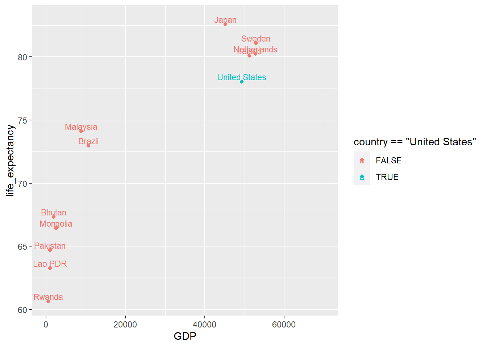

Chapter 4 Europe Open data
4.1 Sources
The European Commission provides several tools to access open published data concerning different thematics.
4.1.1 European Union Open data portal
The European Union Open data portal provides access to an expanding range of data from the European Union institutions and other EU bodies. It contains several services
- A standardized catalogue, giving easy access to EU open data
- A list of apps and web tools reusing these data
- A SPARQL endpoint query editor
- REST API access
The different datasets are categorized based based on W3C’s Data Catalogue Vocabulary specifications: DCAT), DCAT-AP.
These categories include the following themes:
- Agriculture, fisheries, forestry and food: Agricultural and Vegetable Catalogue, Production of cheese, Food Additives, Pesticides, Chemical contaminants data…
- Economy and finance: Real GDP growth rate, Economic sentiment indicator, ECFIN annual macroeconomic database, EU trade since 1988 by CN8, E-commerce sales…
- Education, culture and sport: Gender Equality Index, Erasmus mobility statistics…
- Energy: Energy statistical datasheets for the EU countries, Electricity prices by type of user, Greenhouse gas emissions per capita…
- Environment: CO2 emissions per inhabitant in the EU and in developing countries, World digital elevation model (ETOPO5), AirBase - The European air quality database…
- Government and publc sector: Transparency Register, Members of the European Parliament (MEPs), Gender Equality Index, Register of Commission documents…
- Health: COVID-19 Coronavirus data, Health Programmes Data Base, Healthy life years at birth by sex…
- International issues: EU Member States and international human rights obligations, CD - Diplomatic Corps…
- Justice, legal system and public safety: EU legislation - basic acts, EU case-law, Schengen visa statistics…
- Regions and cities: Taxes in Europe database, Eco-Innovation Project Database…
- Population and society: Population density by NUTS 2 region, Unemployment rate by NUTS 2 regions…
- Science and technology: EU research projects under Horizon 2020, Gross domestic expenditure on R&D (GERD)…
- Transport: Total length of motorways, Airport traffic data by reporting airport and airlines, Motorisation rate, Total length of railway lines…
4.1.2 OECD Data
The OECD (Organisation for Economic Co-operation and Development) publishes databases and statistcs via a Data Portal. It provides an online platform that allows visitors to create custom charts based on official OECD indicators. It consists of:
- Interactive and dynamic databases and statistics: https://stats.oecd.org/Index.aspx
- API to query the data: https://data.oecd.org/api/
- A list of datasets relative to various topics: agriculture, economy, education, environment…
4.1.3 Eurostat
Eurostat is the statistical office of the European Union. Its mission is to provide high quality statistics for Europe. Those statistics enable comparisons between countries and regions. It may help decision makers in different levels (EU level, local governement, businesses…) in addition to public and media use. Eurostat offers a whole range of important and interesting data concerning different thematics: population and society, helath, transport, economy and finance… The main role of Eurostat is to process and publish statistical information at European level by defining common methods, concepts, structures and technical standards. Eurostat does not collect data. The data collection is done in Member States by their statistical authorities. The role of Eurostat is to consolidate the data and ensure they are comparable and harmonized. Eurostat is the only provider of statistics and harmonized data at European level.
- Data accessibility: The different statistics are available in Eurostat database with some visualisation tools. Eurostat’ss datasets are updated twice a day and can be loaded by bulk donwload or via web services.
- Matadata: The different definitions, classifications, methologies, codes are provided within metadat sections
- Data quality: Eurostat ensures data quality based on a Quality assurance framework build for European statistical system.
- Geographical data: Within Eurostat, GISCO (Geographical Information System of the COmmision) is reposnible for geographical information levels: European Union, its member countries, and its regions (https://ec.europa.eu/eurostat/web/nuts/statistics-illustrated).
For futher information about handling goegraphical data see:
- INSPIRE: https://inspire.ec.europa.eu/
- European Forum for Geography and statistics: https://www.efgs.info/
- Copernicus: https://www.copernicus.eu/en
- EPSON: https://www.espon.eu/programme/espon/espon-2020-cooperation-programme
4.2 Themes
Eurostat databases and tables are organised according to nine statistical themes:
- Genral and regional statistics
- Economy and finance
- Population and social conditions
- Industry, trade and services
- Agriculture, forestry and fisheries
- International trade
- Transport
- Environment and energy
- Science, technology, digital society
library(knitr)
library(kableExtra)
# extract main themes
themes.values = as.character(unique(Eurostat.themes$Theme.L0))
themes.values = themes.values[themes.values != ""]
# extract their row numbers
row.main.theme = which(Eurostat.themes$Theme.L0 %in% themes.values)
# generate table
kable(Eurostat.themes) %>%
kable_styling(bootstrap_options = c("striped", "hover", "condensed", "responsive"),
font_size = 12) %>%
row_spec(row.main.theme, bold = T, color = "black", background = "#A7C4C3") %>%
scroll_box(width = "100%", height = "500px")| Theme.L0 | Themes.L1 | Themes.L2 | Table.name | Table.code | Description |
|---|---|---|---|---|---|
| Population and social conditions | Demography and migration | Population | Population on 1 January | tps00001 | The number of persons having their usual residence in a country on 1 January of the respective year |
| Population by age group | tps00010 | Share of population in a certain age group compared to the total population. | |||
| Foreign-born population | tps00178 | Number of persons born abroad | |||
| Population density | tps00003 | The ratio between the annual average population and the land area (Persons per square kilometre) | |||
| Fertility | Total fertility rate | tps00199 | The mean number of children that would be born alive to a woman during her lifetime | ||
| Live births and crude birth rate | tps00204 | Live births are the births of children that showed any sign of life. | |||
| Mortality | Life expectancy at birth by sex | tps00205 | Life expectancy at birth is defined as the mean number of years that a new-born child can expect to live | ||
| Deaths and crude death rate | tps00029 | The crude death rate is the ratio of the number of deaths during the year to the average population in that year. The value is expressed per 1 000 persons. | |||
| Immigration | Immigration | tps00176 | Total number of long-term immigrants arriving into the reporting country during the reference year | ||
| Emigration | Emigration | tps00177 | Total number of long-term emigrantsleaving from the reporting country during the reference year | ||
| Citizenship | Acquisition of citizenship | tps00024 | Number of grants of citizenship of the reporting country to persons usually resident in the reporting country who have previously been citizens of another country or who have been stateless. | ||
| Marriages and divorces | Crude marriage rate and crude divorce rate | tps00206 | The ratio of the number of marriages during the year to the average population in that year. The value is expressed per 1000 persons. | ||
| Population projections | Population projections | tps00002 | Population projections show how the population size and structure would change if the assumptions made regarding fertility, mortality and migration remained true over the whole projection period. | ||
| Health | Health status | Healthy life years at birth by sex | tps00150 | It measures the number of years that a person at birth is still expected to live in a healthy condition | |
| Life expectancy at birth by sex | tps00208 | The mean number of years still to be lived by a person at birth | |||
| Health care | Practising physicians | tps00044 | The number of practising physicians | ||
| Hospital beds | tps00046 | Total hospital beds are all hospital beds which are regularly maintained and staffed and immediately available for the care of admitted patients; both occupied and unoccupied beds are covered. | |||
| Total Health Care Expenditure | tps00207 | The economic resources dedicated to health functions (in million euro) | |||
| Causes of death | Causes of death, by sex | tps00152 | Causes of death: cancer, accidents, homicide, suicide…) | ||
| Education and training | Participation in education and training | Participation in early childhood education by sex | sdg_04_30 | The share of the children between the age of four and the starting age of compulsory primary education who participated in early childhood education | |
| Education and training outcomes | At most lower secondary educational attainment by age | tps00197 | the percentage of people aged 25 to 64 who have successfully completed at most lower secondary education | ||
| Employment rates of recent graduates | tps00053 | ||||
| Labour market | Employement and unemployement (Labour Force Survey) | Employment rate by sex, age group 20-64 | t2020_10 | The employment rate is calculated by dividing the number of persons aged 20 to 64 in employment by the total population of the same age group. | |
| Total unemployment rate | tps00203 | Unemployment rates represent unemployed persons as a percentage of the labour force | |||
| Hours worked per week of full-time employment | tps00071 | The average number of hours corresponds to the number of hours the person normally works. | |||
| job vacancy statistics | Job vacancies in number and % | tps00172 | the proportion of total posts that are vacant, | ||
| Earnings | Average gross annual earnings in industry and services, by sex | tps00175 | Gross earnings are remuneration (wages and salaries) in cash paid directly to the employee, before any deductions for income tax and social security contributions paid by the employee. | ||
| Labor costs | Labour costs annual data | tps00173 | Labour cost index shows the short-term development of the total cost, on an hourly basis, for employers of employing the labour force. | ||
| Income and living conditions | Monetary poverty | At-risk-of-poverty threshold - EU-SILC survey | tessi014 | The threshold is set at 60 % of the national median equivalised disposable income (after social transfers). | |
| Distribution of income | Income quintile share ratio (S80/S20) by sex | tessi180 | The ratio of total income received by the 20 % of the population with the highest income (top quintile) to that received by the 20 % of the population with the lowest income (lowest quintile). | ||
| Population structure | Distribution of population by household types - EU-SILC survey | tesov190 | The indicator gives for each type of household the percentage of the total population. | ||
| Social protection | Social protection | Expenditure on social protection | tps00098 | ||
| Environment | Emissions of greenhouse gases and air polluants | Greenhouse gas emissions (source: EEA) | sdg_13_10 | The indicator measures total national emissions | |
| Pollutant emissions from transport | t2020_rk300 | ||||
| Exposure to air pollution by particulate matter (source: EEA) | sdg_11_50 | The indicator measures the population weighted annual mean concentration of particulate matter at urban background stations in agglomerations. | |||
| Material flows and resources productivity | Resource productivity and domestic material consumption (DMC) | sdg_12_20 | Resource productivity is gross domestic product (GDP) divided by domestic material consumption (DMC). | ||
| Domestic material consumption per capita | t2020_rl110 | The indicator is defined as the total amount of material directly used in an economy and equals direct material input (DMI) minus exports. For the ‘per capita’ calculation of the indicator the average population is used | |||
| Environmental taxes | Environmental tax revenues | t2020_rt320 | the proportion of environmental tax revenues in total revenues from all taxes and social contributions | ||
| Environmetal protection expediture | Environmental protection expenditure of the public sector by type | ten00049 | the money spent on all purposeful activities directly aimed at the prevention, reduction and elimination of pollution or any other degradation of the environment | ||
| Environmental goods and service sector | Employment in the EU environmental economy by environmental protection and resource management activities | ten00131 | |||
| Waste | Waste generation and treatment | Generation of waste by economic activity | ten00106 | Total amount of waste generated by households and businesses by economic activity according to NACE Rev. 2 and year. | |
| Generation of waste by waste category | ten00108 | Total amount of waste generated by households and businesses, by waste category (EWC-Stat 4) and year | |||
| Waste generated by households by year and waste category | ten00110 | Waste generated by households (EP-HH) by year and waste category (EWC-Stat 4). | |||
| Water | Water exploitation index by type of water source | sdg_06_60 | |||
| Water resources: long-term annual average | ten00001 | ||||
| Fresh water abstraction by source - million m³ | ten00002 | ||||
| Biodiversity | Surface of terrestrial sites designated under NATURA 2000 (source: DG ENV, EEA) | sdg_15_20 | |||
| Energy | Energy statistics | Share of renewable energy in gross final energy consumption | t2020_31 | ||
| Electricity prices by type of user | ten00117 | ||||
| Gas prices by type of user | ten00118 | ||||
| Gross available energy by product | ten00121 | ||||
| Total energy supply by product | ten00122 | ||||
| Final energy consumption by product | ten00123 | ||||
| Final energy consumption by sector | ten00124 | ||||
| Final energy consumption in households by type of fuel | ten00125 | ||||
| Science and technology | Research and development | Statistics on reserach and developement | Research and development expenditure, by sectors of performance | tsc00001 | |
| Total researchers by sectors of performance - head count | tsc00003 | ||||
| Government budget on R&D | Share of government budget appropriations or outlays on research and development | tsc00007 | |||
| Hight-tech industry | High-tech exports | tin00140 | |||
| Human resources in Science and technology | Doctorate students in science and technology fields | tsc00028 | |||
| Patent | Patent applications to the European patent office (EPO) by priority year | tsc00009 | |||
| Digital economy and society | ICT usage in households and by individuals | Connection to the internet and computer use | Level of internet access - households | tin00134 | |
| Internet use | Internet use by individuals | tin00028 | |||
| E-commerce | Individuals using the internet for ordering goods or services | tin00096 | |||
| E-government | Individuals using the internet for interaction with public authorities | tin00012 | |||
| ICT sector | Percentage of the ICT sector on GDP | tin00074 | |||
| Percentage of the ICT personnel on total employment | tin00085 | ||||
| Transport | Transport volume and modal split | Volume of passenger transport relative to GDP | ttr00001 | ||
| Modal split of passenger transport | t2020_rk310 | ||||
| Railway transport | Rail transport of passengers | ttr00015 | |||
| Total length of railway lines | ttr00003 | ||||
| Road transport | Total length of motorways | ttr00002 | |||
| Air transport | Air transport of passengers | ttr00012 | |||
| Air transport of goods | ttr00011 | ||||
| International trade | international trade in goods - long term indicators | Trade in goods, by main world traders | tet00018 | ||
| Trade volume indices, by reporting country | tet00001 | ||||
| EU27 trade by member state, partner and product group | Intra-EU27 (from 2020) trade, by Member State, total product | tet00011 | |||
| international trade in goods - short term indicators | Imports of goods - total | teiet110 | |||
| Exports of goods - total | teiet010 | ||||
| Agriculture, forestry and fisheries | Agriculture | Farm structure | Farm labour force | tag00020 | Farm labour force includes all persons having completed their compulsory education who carried out farm work on the holding during the 12 months ending on the reference day of the survey |
| Economic accounts for agriculture | Output of the agricultural industry - basic and producer prices | tag00102 | Output is valued at basic prices. The basic price is defined as the price received by the producer, after deduction of all taxes on products but including all subsidies on products. | ||
| Agricultual prces and price indices | Producer price indices, total agricultural production | tag00046 | |||
| Agriculture production | Utilised agricultural area by categories | tag00025 | |||
| Production of meat: pigs | tag00042 | ||||
| Number of bovine animals | tag00016 | ||||
| Organic farming | Area under organic farming | sdg_02_40 | |||
| Forestry | Gross value added of the forestry industry, at basic prices | tag00058 | |||
| Roundwood production | tag00072 | All quantities of wood removed from the forest and other wooded land or other felling site during a certain period of time | |||
| Fisheries | Catches in all fishing regions | tag00076 | |||
| Industry, trade and services | Short-term business statistics | Industry | Production in industry - total (excluding construction) | teiis080 | |
| Turnover in industry - manufacturing | teiis150 | ||||
| Domestic producer prices - total industry (excluding construction) | teiis010 | the average price development of all goods and related services resulting from the activity of the industry sector and sold on the domestic market | |||
| Import prices - total industry | teiis011 | the monthly transaction price development of imported goods purchased from non-domestic areas by domestic residents | |||
| Labour input - total industry (excluding construction) | teiis400 | This table presents 3 indexes showing the development of labour input in the sector of industry (excluding construction): Number of persons employed, the hours worked and the wages and salaries. | |||
| Construction, building and civil engineering | Production in construction | teiis500 | |||
| Building permits - monthly data | teiis550 | ||||
| Construction cost of new residential buildings | teiis510 | ||||
| Wholesale and retail trade | Retail trade turnover - total | teiis200 | The Retail Trade Index is a business cycle indicator which shows the monthly activity of the retail sector in value and volume. It is a short-term indicator for final domestic demand. | ||
| Services | Turnover in services - index by NACE Rev. 2 | teiis700 | |||
| Structural business statistics | SBS - main indicators | Turnover by NACE Rev. 2 | tin00149 | Turnover is the total of all sales (excluding VAT) of goods and services carried out by the enterprises of a given sector during the reference period | |
| Value added by NACE Rev. 2 | tin00150 | Value added represents the difference between the value of what is produced and intermediate consumption entering the production, less subsidies on production and costs, taxes and levies. | |||
| Persons employed by NACE Rev. 2 | tin00151 | ||||
| SBS - services | Credit institutions: number of enterprises | tin00015 | |||
| Credit institutions: number of persons employed | tin00016 | ||||
| Insurance, by type of enterprise | tin00019 | ||||
| Insurance, number of persons employed by type of enterprises | tin00023 | ||||
| Pension funds: total investments | tin00035 | ||||
| Business demography statistics | Business demography main variables - NACE Rev. 2 | tin00170 | Business demography contains information for characteristics and demography of the business population. The category presents main variables, such as enterprise births (often referred to as business entries), enterprise deaths (often referred to as business exits), and enterprise survivals | ||
| Tourism | Annual data on tourism industries | Arrivals of residents/non-residents at tourist accommodation establishments | tin00174 | ||
| Nights spent at tourist accommodation establishments by NACE | tin00177 | A night spent is each night a guest/tourist (resident or non-resident) actually spends (sleeps or stays) or is registered (his/her physical presence there being unnecessary) in a tourist accommodation establishment. | |||
| Net occupancy rate of bed-places and bedrooms in hotels and similar accommodation | tin00180 | ||||
| Number of establishments and bed-places | tin00181 | ||||
| Number of bed-places by NACE | tin00182 | ||||
| Annual data on trips of EU residents | Participation in tourism for personal purposes (number of tourists) | tin00185 | |||
| Number of trips by purpose | tin00188 | ||||
| Number of trips by length of stay | tin00189 | ||||
| Number of trips by country/world region of destination | tin00190 | ||||
| Average expenditure per trip | tin00195 | The total consumption expenditure made by a visitor or on behalf of a visitor for and during his/her trip and stay at destination | |||
| Economy and finance | National accounts | Main GDP aggregates | Gross domestic product at market prices | tec00001 | It reflects the total value of all goods and services produced less the value of goods and services used for intermediate consumption in their production. |
| Compensation of employees | tec00013 | the total remuneration, in cash or in kind, payable by an employer to an employee in return for work done by the latter | |||
| Exports of goods and services in % of GDP | tet00003 | ||||
| Imports of goods and services in % of GDP | tet00004 | ||||
| Real GDP per capita | sdg_08_10 | ||||
| Final consumption expenditure of households, by consumption purpose | tec00134 | ||||
| Annual sector accounts | Household saving rate | tec00131 | It is defined as gross saving divided by gross disposable income | ||
| Household investment rate | tec00098 | It is defined as gross fixed capital formation divided by gross disposable income | |||
| Net national income | tec00133 | Gross national income (at market prices) represents total primary income receivable by resident institutional units in return for some engagement in productive activity | |||
| Government statistics | Annual government finance statistics | Total general government revenue | tec00021 | ||
| Total general government expenditure | tec00023 | ||||
| Taxes on production and imports | tec00020 | ||||
| Current taxes on income, wealth, etc. | tec00018 | ||||
| Net Social contributions | tec00019 | Net social contributions (ESA 2010 code D.61) are the actual or imputed contributions made by households to social insurance schemes to make provision for social benefits to be paid | |||
| Government deficit and debt | General government deficit/surplus | tec00127 | |||
| General government gross debt | sdg_17_40 | ||||
| Exchange rates | Euro/national currency exchange rates | teimf200 | |||
| Prices | Harmonised index of consumer prices | HICP - all items - annual average indices | tec00027 | ||
| HICP - inflation rate | tec00118 | ||||
| HICP - food | teicp010 | ||||
| HICP - housing | teicp040 |
We can plot
4.3 Tools
Here are some R and python packages providing easy access to Eurostat data:
- Eurostat: http://ropengov.github.io/eurostat/
- restatapi:https://github.com/eurostat/restatapi
- rsdmx: https://github.com/opensdmx/rsdmx
In this section we will actively use the eurostat package. It provides various fonctionaities: data search, download, manipulation and visualization. The package homepageis: http://ropengov.github.io/eurostat/
4.3.1 Finding data
The function get_eurostat_toc() downloads a table of contents of eurostat datasets. The values in column ‘code’ should be used to download a selected dataset.
## Loading required package: xml2# Get Eurostat data listing
toc <- get_eurostat_toc()
# Check the first items
library(knitr)
kable(head(toc))| title | code | type | last update of data | last table structure change | data start | data end | values |
|---|---|---|---|---|---|---|---|
| Database by themes | data | folder | NA | NA | NA | NA | NA |
| General and regional statistics | general | folder | NA | NA | NA | NA | NA |
| European and national indicators for short-term analysis | euroind | folder | NA | NA | NA | NA | NA |
| Business and consumer surveys (source: DG ECFIN) | ei_bcs | folder | NA | NA | NA | NA | NA |
| Consumer surveys (source: DG ECFIN) | ei_bcs_cs | folder | NA | NA | NA | NA | NA |
| Consumers - monthly data | ei_bsco_m | dataset | 15.05.2020 | 29.04.2020 | 1980M01 | 2020M04 | NA |
The function search_eurostat can be used to search the table of contents for specifc text pattern. For example we can search for different datsets related to transport and passenger theme.
| title | code | type | last update of data | last table structure change | data start | data end | values |
|---|---|---|---|---|---|---|---|
| Volume of passenger transport relative to GDP | tran_hv_pstra | dataset | 12.09.2019 | 27.02.2020 | 2000 | 2017 | NA |
| Modal split of passenger transport | tran_hv_psmod | dataset | 09.09.2019 | 27.02.2020 | 1990 | 2017 | NA |
| Air passenger transport by reporting country | avia_paoc | dataset | 11.05.2020 | 10.04.2020 | 1993 | 2020Q1 | NA |
| Air passenger transport by main airports in each reporting country | avia_paoa | dataset | 11.05.2020 | 10.04.2020 | 1993 | 2020Q1 | NA |
| Air passenger transport between reporting countries | avia_paocc | dataset | 11.05.2020 | 10.04.2020 | 1993 | 2020Q1 | NA |
| Air passenger transport between main airports in each reporting country and partner reporting countries | avia_paoac | dataset | 11.05.2020 | 10.04.2020 | 1993 | 2020Q1 | NA |
4.3.2 Downloading data
The package offers two Eurostats download methods:
- the bulk download: It is the fastest method to download whole dataset
- the web service JSON API: it has limitation of maximum 50 sub-indicators at a time. To download only a small section of the dataset the JSON API is faster, as it allows to make a data selection before downloading.
Here an example of indicator ‘Modal split of passenger transport’. This is the percentage share of each mode of transport in total inland transport, expressed in passenger-kilometres (pkm) based on transport by passenger cars, buses and coaches, and trains. All data should be based on movements on national territory, regardless of the nationality of the vehicle. However, the data collection is not harmonized at the EU level.
Pick and print the id of the data set to download:
# For the original data, see
# http://ec.europa.eu/eurostat/tgm/table.do?tab=table&init=1&plugin=1&language=en&pcode=tsdtr210
id <- search_eurostat("Modal split of passenger transport",
type = "table")$code[1]
print(id)## [1] "t2020_rk310"Get the whole corresponding table. As the table is annual data, it is more convient to use a numeric time variable than use the default date format:
## Table t2020_rk310 cached at C:\Users\saif\AppData\Local\Temp\Rtmp8Yaa3U/eurostat/t2020_rk310_num_code_TF.rds## tibble [2,641 x 5] (S3: tbl_df/tbl/data.frame)
## $ unit : Factor w/ 1 level "PC": 1 1 1 1 1 1 1 1 1 1 ...
## $ vehicle: Factor w/ 3 levels "BUS_TOT","CAR",..: 1 1 1 1 1 1 1 1 1 1 ...
## $ geo : Factor w/ 35 levels "AT","BE","CH",..: 1 2 3 4 5 6 7 8 9 10 ...
## $ time : num [1:2641] 1990 1990 1990 1990 1990 1990 1990 1990 1990 1990 ...
## $ values : num [1:2641] 11 10.6 3.7 9.1 11.3 32.4 14.9 13.5 6 24.8 ...| unit | vehicle | geo | time | values |
|---|---|---|---|---|
| PC | BUS_TOT | AT | 1990 | 11.0 |
| PC | BUS_TOT | BE | 1990 | 10.6 |
| PC | BUS_TOT | CH | 1990 | 3.7 |
| PC | BUS_TOT | DE | 1990 | 9.1 |
| PC | BUS_TOT | DK | 1990 | 11.3 |
| PC | BUS_TOT | EL | 1990 | 32.4 |
Or you can get only a part of the dataset by defining filters argument. It should be named list, where names corresponds to variable names (lower case) and values are vectors of codes corresponding desidered series (upper case). For time variable, in addition to a time, also a sinceTimePeriod and a lastTimePeriod can be used.
dat2 <- get_eurostat(id, filters = list(geo = c("EU28", "FI"), lastTimePeriod=1), time_format = "num")
kable(dat2)| unit | vehicle | geo | time | values |
|---|---|---|---|---|
| PC | BUS_TOT | EU28 | 2017 | 8.8 |
| PC | BUS_TOT | FI | 2017 | 10.4 |
| PC | CAR | EU28 | 2017 | 83.3 |
| PC | CAR | FI | 2017 | 84.2 |
| PC | TRN | EU28 | 2017 | 7.9 |
| PC | TRN | FI | 2017 | 5.4 |
4.3.3 replacing codes with labels
By default variables are returned as Eurostat codes, but to get human-readable labels instead, use a type = "label" argument.
datl2 <- get_eurostat(id, filters = list(geo = c("EU28", "FI"),
lastTimePeriod = 1),
type = "label", time_format = "num")
kable(head(datl2))| unit | vehicle | geo | time | values |
|---|---|---|---|---|
| Percentage | Motor coaches, buses and trolley buses | European Union - 28 countries (2013-2020) | 2017 | 8.8 |
| Percentage | Motor coaches, buses and trolley buses | Finland | 2017 | 10.4 |
| Percentage | Passenger cars | European Union - 28 countries (2013-2020) | 2017 | 83.3 |
| Percentage | Passenger cars | Finland | 2017 | 84.2 |
| Percentage | Trains | European Union - 28 countries (2013-2020) | 2017 | 7.9 |
| Percentage | Trains | Finland | 2017 | 5.4 |
Eurostat codes in the downloaded data set can be replaced with human-readable labels from the Eurostat dictionaries with the label_eurostat() function
| unit | vehicle | geo | time | values |
|---|---|---|---|---|
| Percentage | Motor coaches, buses and trolley buses | Austria | 1990 | 11.0 |
| Percentage | Motor coaches, buses and trolley buses | Belgium | 1990 | 10.6 |
| Percentage | Motor coaches, buses and trolley buses | Switzerland | 1990 | 3.7 |
| Percentage | Motor coaches, buses and trolley buses | Germany (until 1990 former territory of the FRG) | 1990 | 9.1 |
| Percentage | Motor coaches, buses and trolley buses | Denmark | 1990 | 11.3 |
| Percentage | Motor coaches, buses and trolley buses | Greece | 1990 | 32.4 |
The label_eurostat() allows conversion of individual variable vectors or variable names as well.
## [1] "Unit of measure"
## [2] "Vehicles"
## [3] "Geopolitical entity (reporting)"
## [4] "Period of time (a=annual, q=quarterly, m=monthly, d=daily, c=cumulated from January)"4.4 Analysis
We will present in this section some analysis of european data provided by eurostat statistics.
4.4.2 Environment
4.4.2.1 Greenhouse gas emissions (source: EEA)
The indicator measures total national emissions (from both ESD and ETS sectors) including international aviation of the so called ‘Kyoto basket’ of greenhouse gases, including carbon dioxide (CO2), methane (CH4), nitrous oxide (N2O), and the so-called F-gases (hydrofluorocarbons, perfluorocarbons, nitrogen triflouride (NF3) and sulphur hexafluoride (SF6)) from all sectors of the GHG emission inventories (including international aviation, excluding land use, land use change and forestry (LULUCF)). Using each gas’ individual global warming potential (GWP), they are being integrated into a single indicator expressed in units of CO2 equivalents. The GHG emission inventories are submitted annually by the EU Member States to the United Nations Framework Convention on Climate Change (UNFCCC).
# get data
sdg_13_10_data <- eurostat::get_eurostat("sdg_13_10",
time_format = "date",
stringsAsFactors = FALSE,
filters = list(indic_env = "GHG_T_HAB"))
# filter one year
sdg_13_10_data_2017 = sdg_13_10_data %>% filter(time == "2017-01-01")
# plot table
kable(sdg_13_10_data_2017) %>%
kable_styling(bootstrap_options = c("striped", "hover", "condensed", "responsive"),
font_size = 12) %>%
scroll_box(width = "100%", height = "500px")| indic_env | geo | time | values |
|---|---|---|---|
| GHG_T_HAB | AT | 2017-01-01 | 9.6 |
| GHG_T_HAB | BE | 2017-01-01 | 10.5 |
| GHG_T_HAB | BG | 2017-01-01 | 8.8 |
| GHG_T_HAB | CH | 2017-01-01 | 6.2 |
| GHG_T_HAB | CY | 2017-01-01 | 11.6 |
| GHG_T_HAB | CZ | 2017-01-01 | 12.3 |
| GHG_T_HAB | DE | 2017-01-01 | 11.3 |
| GHG_T_HAB | DK | 2017-01-01 | 8.8 |
| GHG_T_HAB | EE | 2017-01-01 | 16.0 |
| GHG_T_HAB | EL | 2017-01-01 | 9.2 |
| GHG_T_HAB | ES | 2017-01-01 | 7.7 |
| GHG_T_HAB | EU27_2020 | 2017-01-01 | 8.9 |
| GHG_T_HAB | EU28 | 2017-01-01 | 8.8 |
| GHG_T_HAB | FI | 2017-01-01 | 10.4 |
| GHG_T_HAB | FR | 2017-01-01 | 7.2 |
| GHG_T_HAB | HR | 2017-01-01 | 6.2 |
| GHG_T_HAB | HU | 2017-01-01 | 6.6 |
| GHG_T_HAB | IE | 2017-01-01 | 13.3 |
| GHG_T_HAB | IS | 2017-01-01 | 17.2 |
| GHG_T_HAB | IT | 2017-01-01 | 7.3 |
| GHG_T_HAB | LI | 2017-01-01 | 5.1 |
| GHG_T_HAB | LT | 2017-01-01 | 7.3 |
| GHG_T_HAB | LU | 2017-01-01 | 20.0 |
| GHG_T_HAB | LV | 2017-01-01 | 6.1 |
| GHG_T_HAB | MT | 2017-01-01 | 5.5 |
| GHG_T_HAB | NL | 2017-01-01 | 12.0 |
| GHG_T_HAB | NO | 2017-01-01 | 10.3 |
| GHG_T_HAB | PL | 2017-01-01 | 11.0 |
| GHG_T_HAB | PT | 2017-01-01 | 7.2 |
| GHG_T_HAB | RO | 2017-01-01 | 5.9 |
| GHG_T_HAB | SE | 2017-01-01 | 5.5 |
| GHG_T_HAB | SI | 2017-01-01 | 8.5 |
| GHG_T_HAB | SK | 2017-01-01 | 8.0 |
| GHG_T_HAB | TR | 2017-01-01 | 6.7 |
| GHG_T_HAB | UK | 2017-01-01 | 7.7 |
# plot emission in 2017
ggplot(sdg_13_10_data_2017, aes(x = reorder(geo, values), y = values)) +
geom_col(color = "white", fill = "gray") +
theme(axis.text.x = element_text(size = 6)) +
labs(title = "Greenhouse gas emission - tonnes per capita (2017)", y = "Greenhouse gas emission - tonnes per capita", x = NULL)